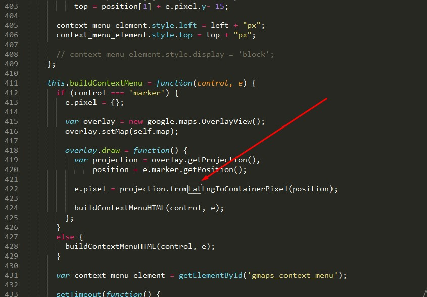
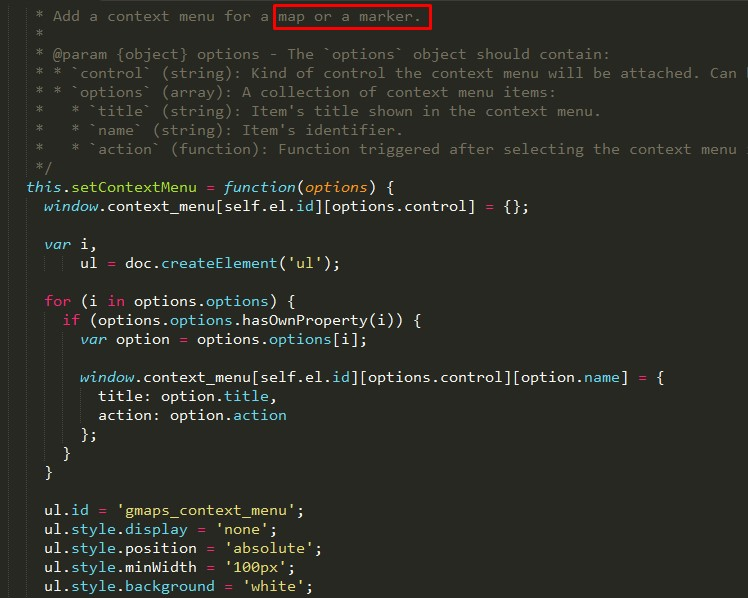

Thank you for purchasing 'Adminpix' If you have any questions that are beyond the scope of this help file, please feel free to submit a ticket at our Support Forum. Thanks so much!
Adminpix is a HTML template for admin dashboard. It is really suitable template for the developers.It has 70+ pages and almost all types of 2500 + icons. It is purpose oriented design, responsive layout and special features like wonderful appointment forms, gallery items, testimonials and many more.
Adminpix is very easy to update and modify, it will adapt your website and brand in no time. Steps for modification and updating are described step by step in this exclusive documentation.
Whole template is divided in to several folders and their content defines by the folder names easily.
Adminpix is based upon Twitter Bootstrap css framework that is very easy to use and adapt. It follows the mobile first approach to make the website readily available for all devices and screen sizes. Bootstrap grid is based upon 12 columns that are well defined in the bootstrap.css file inside the css folder. You can get to know about the grid system in detail from this url http://getbootstrap.com/css/#grid
Adminpix used Linear icon fonts for its icons requirement and no images has been used for any icon. A complete list of icons along with the class names can be found here: https://linearicons.com/free
To use an icon on any page of the theme use the below code:
Adminpix used also font awesome icon fonts for its icons requirement and no images has been used for any icon. A complete list of icons along with the class names can be found here: http://fontawesome.io/cheatsheet/
To use an icon on any page of the theme use the below code:
All icons class name will always start with the fa- . There are several sizes for icons are predefined in the fonts.css inside css folder. i.e. fa-lg, fa-2x, fa-3x
AdminPix_v1.0
├── assets/
├── documentation/
│ ├── assets/
│ │ ├── css/
│ │ ├── font-awesome/
│ │ ├── fonts/
│ │ ├── img/
│ │ └── js
│ └── index.html
├── 404.html
├── 505.html
├── blank.html
├── buttons.html
├── calender.html
├── carousel.html
├── charts_am.html
├── charts_flot.html
├── charts_Js.html
├── charts_morris.html
├── charts_sparkline.html
├── code_editor.html
├── compose.html
├── dataTables.html
├── footable.html
├── forget_password.html
├── form_editor_wysihtml5.html
├── form_file_upload.html
├── form_wizard.html
├── forms_basic.html
├── forms_cropper.html
├── forms_editor_ck.html
├── forms_editor_markdown.html
├── forms_editor_summernote.html
├── forms_editor_trumbowyg.html
├── forms_validation.html
├── gridSystem.html
├── horizontal_timeline.html
├── icheck_toggle_pagination.html
├── icon_socicon.html
├── icons_bootstrap.html
├── icons_flag.html
├── icons_fontawesome.html
├── icons_line.html
├── icons_material.html
├── icons_pe.html
├── icons_weather.html
├── index.html
├── invoice.html
├── labels-badges-alerts.html
├── list.html
├── lockscreen.html
├── login.html
├── mailbox.html
├── mailDetails.html
├── maps_data.html
├── maps_gmaps.html
├── maps_google.html
├── maps_jvector.html
├── maps_snazzy.html
├── modals.html
├── notification.html
├── panels.html
├── pricing.html
├── profile.html
├── progressbars.html
├── register.html
├── slider.html
├── table.html
├── tabs.html
├── timeline.html
├── tree-view.html
├── typography.html
├── widgets.html
└── x-editable.html
Go to your folder and search a file with .html extension.
Just open this file in your editor like brackets or sublime text or notepad plus.
here you will get all of the html code of this template with commenting that indicates you which html are for which section or which div.
if you want to edit the html of header then search header like shown below
Go to your folder and search a folder named css.
Enter into it and then search a file named "style.css".
Just open this file in your editor like brackets or sublime text or notepad plus.
here you will get all of the css of this template with commenting that indicates you which styles are for which section or which div.
if you want to edit the css of header then search header style like shown below
Go to your folder and search a folder named js.
Enter into it and then search a file named "custom.js".
Just open this file in your editor like brackets or sublime text or notepad plus.
here you will get all of the js of this template with commenting that indicates you which js are for which slider or which element.
if you want to edit the js of slider then search slider like shown below
Go to your folder and search a folder named gmap.
Enter into it and open the file named "googlemap.js".
Just open this file in your editor like brackets or sublime text or notepad plus.
Then Just set the value of latitude & Longitude of your place that shown below
At the same file & same page just find a comment "Let's also add a marker while we're at it". Then Just set the same value of latitude & Longitude. Now Look it is done.
How do I open the template?
The template is 100% ready to use, with no compilation needed. Just unzip, go to the html folder and open the index.html file in your browser using a development server
How do I start a simple local development server?
Make sure you have the latest PHP version installed. Then go to the html folder and run the php -S localhost:4000 command from the console. You should see the template running at http://localhost:4000
How do I install/uninstall a dependency with Bower?
Run bower install <dependency-name> --save. After this then you should add the installed dependencies to the .html files.
I have a question, but it is not listed here, what can I do?
Send us an email to bdtask@gmail.com or contact us through our Theme Forest profile and we'll do our best to try to help you.
I would like to see a new plugin installed or functionality developed in Adminpix - Bitcoin and Cryptocurrency HTML Template, is it possible?
We are always trying to improve and adding new functionalities and plugins to Adminpix - Bitcoin and Cryptocurrency HTML Template , so every request is welcomed and will be evaluated.
I found a bug, what can I do?
Please let us know and we'll do our best to fix it as soon as possible
Are updates free?
Yes, they are and always will be
Bootstrap : css front-end framework. http://getbootstrap.com/
Google fonts : Open sans https://fonts.googleapis.com/css?family=Open+Sans:300,300i,400,400i,600,600i,700,700i,800,800i
Google fonts : Alegreya sans https://fonts.googleapis.com/css?family=Alegreya:400,400i,700,700i,900,900i
jQuery : fast, small, and feature-rich JavaScript library. http://jquery.com/
jQuery ui : https://jqueryui.com/
Social Buttons for Bootstrap : Social Sign-In Buttons made in pure CSS based on Bootstrap and Font Awesome! https://lipis.github.io/bootstrap-social/
Notification Styles Inspiration : Simple ideas & effects for website notifications. https://tympanus.net/Development/NotificationStyles/
toastr : Notification plugin. http://codeseven.github.io/toastr/demo.html
Nestable : Drag & drop hierarchical list with mouse and touch compatibility (jQuery plugin). https://dbushell.com/Nestable/
Lobipanel : LobiPanel is jquery plugin for bootstrap panels. It extends panels with several common and useful functions which does not come by default. https://lobianijs.com/site/lobipanel
Nifty Modal : Some inspiration for different modal window appearances. https://tympanus.net/Development/ModalWindowEffects/
iCheck : super customized checkboxes and radio buttons for jQuery & Zepto. http://icheck.fronteed.com/
Bootstrap Toggle : Bootstrap Toggle is a highly flexible Bootstrap plugin that converts checkboxes into toggles. http://www.bootstraptoggle.com/
Validator : A simple and user-friendly form validator plugin for Bootstrap 3. https://1000hz.github.io/bootstrap-validator/
Cropper.js : JavaScript image cropper. http://jquery.com/
Dropzonejs : library that provides drag'n'drop file uploads with image previews. http://www.dropzonejs.com/#configuration-options
CKEditor 4.6 : Enrich CKEditor with image and file uploads. http://ckeditor.com/
Summernote : Supper simple WYSIWYG editor on bootstrap. http://summernote.org/
CodeMirror : http://codemirror.net/
Bootstrap Wizard : http://azmind.com/bootstrap-wizard/
Bootstrap Markdown : Markdown editing meet Bootstrap. http://www.codingdrama.com/bootstrap-markdown/
Trumbowyg : A lightweight WYSIWYG editor. https://alex-d.github.io/Trumbowyg/
Bootstrap-wysihtml5 : Simple, beautiful wysiwyg editors. https://jhollingworth.github.io/bootstrap-wysihtml5/
Data Tables : advanced interaction controls in any HTML table. https://datatables.net/examples/styling/bootstrap.html
FooTable : A responsive table plugin built on jQuery and made for Bootstrap. http://fooplugins.com/plugins/footable-jquery/
DataMaps : Customizable SVG map visualizations for the web in a single Javascript file using D3.js. https://datamaps.github.io/
jvectormap : Works in all modern browsers (including IE6-8) http://jvectormap.com/
Google Maps : Google Maps is a web mapping service developed by Google. https://www.google.com/maps
Snazzy Maps : https://snazzymaps.com/
Flot Charts : simple but powerful chart plugin. http://www.flotcharts.org/
Chart.js : Simple yet flexible JavaScript charting for designers & developers http://www.chartjs.org/
Morris.js : http://morrisjs.github.io/morris.js/
jQuery Sparklines : Good-looking charts library. http://omnipotent.net/jquery.sparkline/#s-about
Font Awesome : The complete set of 675 icons in Font Awesome 4.7.0 http://fontawesome.io/icons/
Material Icons : Access over 900 material system icons, available in a variety of sizes and densities, and as a web font. https://material.io/icons/
Weather Icons : A collection of all country flags in SVG — plus the CSS for easier integration. https://erikflowers.github.io/weather-icons/
Themify Icons : Used by designers & developers for design mockups, print and web projects (SVG format is included). https://themify.me/themify-icons
Pixeden Icon : Complete 202 stroke icons - Pe-icon-7-stroke - 1.2.0 http://themes-pixeden.com/font-demos/7-stroke/
Social icon : Glyphs, primary colors, unicodes. http://www.socicon.com/
Full Calendar : A JavaScript event calendar. Customizable and open source. https://fullcalendar.io/
Pricing Tables : https://tympanus.net/Development/PricingTablesInspiration/
range.Slider : Ion.RangeSlider 2.1.6. jQuery-plugin. http://ionden.com/a/plugins/ion.rangeSlider/
freepic : Graphic resources for everyone http://www.freepik.com/free-vector/funny-people-avatars_844759.htm#term=avatar&page=1&position=2
Pexels : Best free stock photos in one place. https://www.pexels.com/photo/action-active-activity-adult-236958/
flag-icon-css : A collection of all country flags in SVG — plus the CSS for easier integration. http://flag-icon-css.lip.is/
Vertical Timeline : A responsive vertical timeline layout with icons and example media queries. https://tympanus.net/Blueprints/VerticalTimeline/
Bootstrap Vertical Tabs : Missing vertical tabs component for Bootstrap 3 http://dbtek.github.io/bootstrap-vertical-tabs/demo.html
SweetAlert for Bootstrap : A beautiful replacement for JavaScript's "alert" https://lipis.github.io/bootstrap-sweetalert/
monthly.js :http://kthornbloom.com/monthly/
Moment.js : Parse, validate, manipulate, and display dates and times in JavaScript. https://momentjs.com/
Social Buttons for Bootstrap :Social Sign-In Buttons made in pure CSS based on Bootstrap and Font Awesome! https://lipis.github.io/bootstrap-social/
BootStrap TreeView :http://bootsnipp.com/snippets/featured/bootstrap-30-treeview
pace :Automatic page load progress bar http://github.hubspot.com/pace/docs/welcome/
Counter-Up : https://github.com/bfintal/Counter-Up
emojionearea : http://mervick.github.io/emojionearea/
FastClick : https://github.com/ftlabs/fastclick
X-editable :In-place editing with Twitter Bootstrap, jQuery UI or pure jQuery https://vitalets.github.io/x-editable/
Am Charts :JavaScript Charts & Maps https://www.amcharts.com/
Animsition :A simple and easy jQuery plugin for CSS animated page transitions. http://git.blivesta.com/animsition/
gmaps.js :Google Maps API with less pain and more fun http://hpneo.github.io/gmaps/